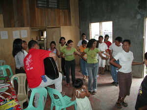

basbas 
/basbas/
v_rt.
“practise”
v.
for someone (egbasbas, migbasbas/imbasbas, agent, eg><ø-) to teach someome else (egbabasen, imbasbas/migbasbas, patient, eg><en-) in performing something (igbasbas, imbasbas, instrument, ig><ø-)
Eng. teach, to
Online dict status: -
Usage level: M
v.
for someone (egbebasbas, migbebasbas/imbebasbas, actor, eg><ø-rdpCV-) to practice or to learn something (egbebasbasan, imbebasbasan/migbebasbasan/pigbebasbasan, location, eg><an-rdpCV-)
Egbebasbas a te kumpiyutir.
I will practice a computer.
Eng. practice; train
Online dict status: -
Usage level: F
vi.
for someone (egkabasbas, nabasbas, actor, egkA><ø-) to becomed practiced at something
Iyan ku igkeupii teg duma-ruma ki Memie su eyew egkabasbas a ne eggilutu te paan.
I like to accompany Memie around so that I learn how to cook bread.
Eng. practice; learn
Online dict status: -
Usage level: M
n.
(basbasen, -en) a disciple - one who learns or practices
Eng. disciple
Online dict status: -
Usage level: R
adj.
(mabebasbas, mA1-rdpCV-) studious
mabebasbas si Inday.
Inday is studious
Eng. studious
Online dict status: -
Usage level: R
v.
for a group (egpambebasbas, migpamebasbas/impamebasbas, actor, egpaN-) to practice something (egpambebasbasan, impambebasbasan/migpambebasbasan/pigpambebasbasan, location, egpaN-rdpCVC–an) for celebration (igpambebasbas, impambebasbas, reason, igpaN-)
Egpambebasbas sikandan te me sayawen ne me Matigsalug.
They are practicing Matigsalug dances.
Egpambebasbasan te me batè sika ne linew te eglumbuk.
That lake is used by the children as a practice place for swimming.
Iyan igpambebasbas dan te egsayew su mahaan e egpista ka Simud.
The thing that they are practicing Matigsalug dances because Sinuda fiesta is coming.
Eng. practice
Online dict status: -
Usage level: R
Updated by: RJH,RJH,AAA,QDL,RJH,QDL
Last updated: 19/Jan/2010
"bebasbas" in text "A Father Tells His Children about School"
This page last updated: 19/May/2012
Copyright © 2009-2010, Matigsalug Language Christian Association, Inc